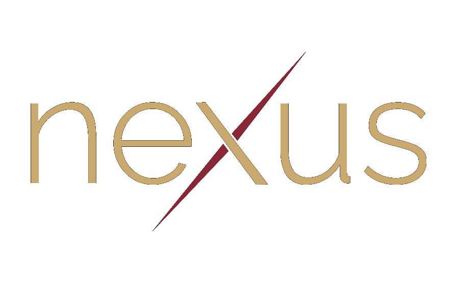

Cornel Serban
À l'intersection de la foi, de la pensée et de la technologie.
Un lieu où je rassemble les méditations que j'écris, le podcast que j'enregistre, et les outils que je construis — pour tous ceux qui vivent cette intersection de près ou de loin.
réflexions
méditations
vidéos


podcast
épisodes
bientôt
Des conversations plus longues — entre pasteurs, créateurs, et ceux qui pensent le monde depuis les marges de l'institution.
outils
ce que je construis
à propos
Cornel Serban. Pasteur, directeur Communication & IT à la Fédération adventiste du Québec, passionné des outils que l'on fabrique pour servir. Né en Roumanie, passé par l'Espagne et la France, basé à Chambly depuis 2024.
Nexus est l'endroit où je publie ce que je crée en dehors des structures — des méditations courtes, un podcast, des petits outils logiciels. Ce qui m'intéresse : la foi vécue honnêtement, la pensée qui prend le temps, et la technologie qui sert au lieu de disperser.